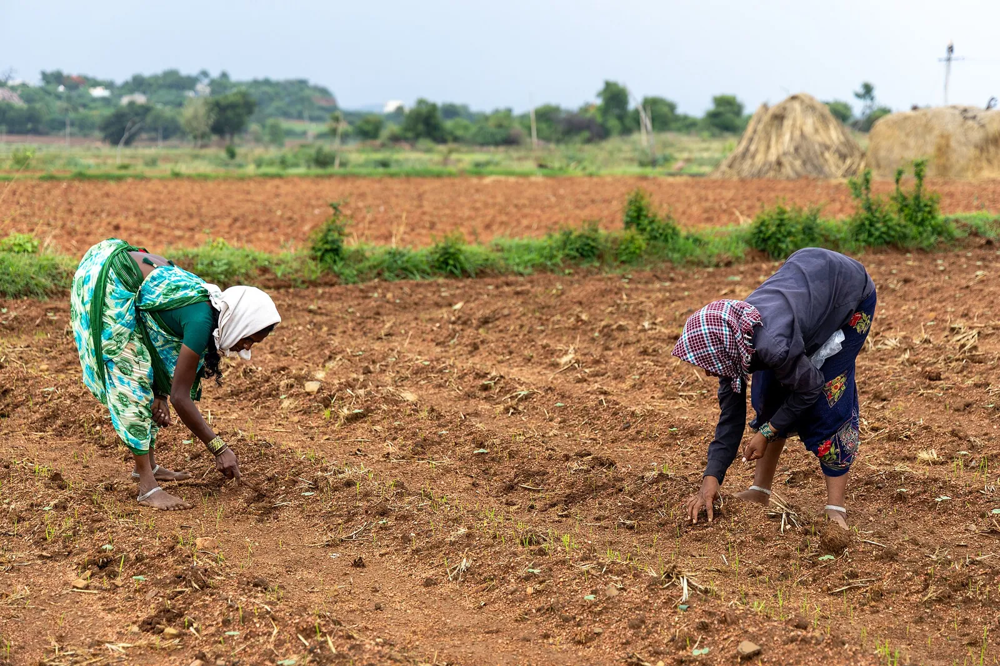

Questions this library cannot answer yet
This planner only enforces what a source backs, so some real questions have no graded answer here - the mechanism is contested, unmeasured, or simply not yet read into the corpus. Naming those edges is the point, not a lapse. Each is tied to the guide that raised it.
A companion to What we don't know →, which lists the numbers the corpus holds but does not stand behind. This page is the other edge: questions it has no graded answer for at all.
4 open questions across 2 guides.
Why won't my tomatoes set fruit? Heat, blossom drop, and the fix that isn't shade
- Does too much nitrogen cause the blossoms to drop?the corpus grades night heat as the fruit-set cause; a nitrogen-to-blossom-drop mechanism has no graded card and none of the heat rule's sources cover it
Rhubarb - the stalks are food, the leaves are poison
- Does a hard freeze move the toxins from the leaves into the stalks?NDSU found no study confirming or disproving it; the corpus does not carry a contested claim as settled
- Are rhubarb leaves toxic to livestock?asserted widely but found only in non-extension secondary sources, below this site's evidence standard
- Are rhubarb leaves safe to compost?nothing in the corpus grades it, and no source behind the leaf-toxicity rule addresses composting